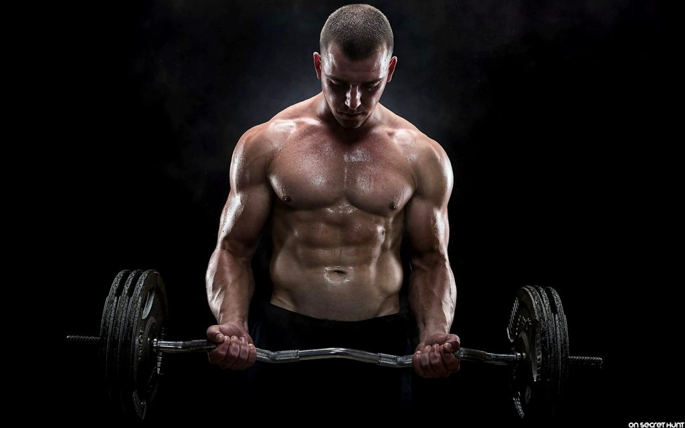

Fitness nedir?
Fitness: Belirli bir zaman diliminde, belirli bir şiddette ve belirli bir sıklıkta uygulanan fiziksel aktiviteleri içermektedir. Fitness'ın temel prensiplerinin en başında yaşam standartlarının iyileştirilmesi gelmektedir. Gün içerisinde daha dinamik, enerjik, yorulmayan, dayanıklılık gibi özelliklerin geliştirilmesine dayanan ve kişilere özel olarak dizayn edilen fiziksel aktiviteleri içermektedir. Yürüyüş yapmak, bisiklete binmek, yüzmek, basketbol oynamak, ağırlık çalışmak, kürek çekmek vb fiziksel aktiviteler sizin fitness seviyenizin yükselmesine yardımcı olmaktadır.
Fitness temel olarak ikiye ayrılmaktadır;
- Genel Fitness: Yaşam kalitenizi artıracak fiziksel aktiviteleri içermektedir. Genel fitness düzeyiniz yükseldikçe, gün içerisinde daha az yorulursunuz, eklem ağrılarından uzaklaşırsınız, daha iyi bir cinsel hayatınız olur gibi günlük hayatınızı olumlu etkileyecek programları içermektedir.
- Spesifik Fitness: Spesifik fitness, ilgilenmekte olduğunuz spor branşına özgü yeteneklerinizin, becerilerinizin, performansınızın daha iyi bir noktaya gelmesi için uygulanan programları içermektedir.

Bodybuilding nedir?
Body Building: Body Building'in temel prensipleri kas geliştirmeye yönelik kademeli direnç egzersizlerini içermektedir. Vücut geliştirme sporu ile ilgilenen kişilerin programları, daha iyi bir kas kütlesine sahip olmak, daha hacimli kaslara ulaşmak ve en iyi olduğu zamanda yarışmalara katılmak üzere tasarlanmaktadır. Body Building sporu yapan kişilerin sezon içi ve sezon dışı olmak üzere uyguladıkları özel beslenme ve antrenman programları bulunmaktadır.
Spor yapmaya başlarken, öncelikle amacınızı belirlemeniz gerekmektedir. Amacınız doğrultusunda spor geçmişinizi ve sağlık durumunuzu göz önünde bulundurarak, uzman eğitmenler ve antrenörler tarafından hazırlanan programları uygulamanız oldukça önemlidir. Bu nedenle hem web sayfamızda hemde internette bulunan programları uygulamadan önce o programların size ne kadar uygun olduğunu bilmeniz gerekmektedir.
Temel olarak belirtmek gerekirse, amacınız sağlıklı olmak, fit bir görüntüye ulaşmak, yaşam kalitenizin artması ise size özel olarak hazırlanacak Fitnessprogramlarını tercih etmelisiniz. Eğer amacınız, daha hacimli kaslara ulaşarak yarışmalara katılmak veya bu spordan maddi bir kazanç elde etmek ise Body Building programlarını tercih etmelisiniz. Eğer yarışmalara katılmayacaksanız ve bu sporla hobi amaçlı ilgileniyorsanız, vücudunuza zarar verecek antrenman programlarından ve beslenme planlarından uzak durmalısınız.
Fitness Programı Nasıl Hazırlanır?
Fitness sporunu yapan pek çok insan, bu sporu yaparken nasıl bir program uygulaması gerektiği ve hangi programın kendisi için daha verimli olabileceği gibi soruların cevaplarını merak etmektedir.Fitness programları hazırlanırken kişinin boy kilo orantısı,vücut yapısı,eksik olan bölgeleri gibi çeşitli kriterler göz önüne alınır.Bugünkü yazımızda sizlere fitness programı hazırlanırken nelere dikkat edilmelidir ve doğru bir fitness programı nasıl hazırlanır gibi soruların cevaplarını vermeye çalışacağız.
Spor salonlarına yazıldığınızda hocalar genellikle ilk aylarda bu spora hazır olmanız için bir gün içerisinde bütün vücudunuzu çalıştırmaya yönelik egzersizler içeren program hazırlar.Bu sistem kesinlikle doğru bir sistemdir.İlk zamanlarda uygulayacağınız bu tarz fitness programları vücudunuzdaki kasların işlevselliğini arttırır ve bölgesel çalışma programlarına hazırlanmanızı sağlar.Bu programda vücudunuzdaki temel her bir kas bölgesi için bir veya iki hareket yer alır.Genellikle göğüs,sırt,bacak gibi büyük kas grupları için iki hareket bulunurken biceps,triceps,omuz,kalf gibi kaslar için tek hareket yer almaktadır.Fitness sporunda ilk ay veya ikinci ay bu şekilde bir program uyguladıktan sonra bölgesel çalışma sistemine geçebilirsiniz.
Bölgesel çalışma programları ise bir çok şekilde kombine edilebilmektedir. Örnek vermem gerekirse bazı sporcular 1 gün içerisinde tek kas grubunu çalıştırırken bazı sporcular 1 gün içerisinde 2 kas grubunu çalıştırmaktadır.Buna karın ilave edildiği günler 3 kas grubuna çıktığı da olabilir. Genellikle fitness programlarında tercih edilen bir günde 2 kas grubunu çalıştırmaktır.Hangi kasların birlikte çalıştırılmasının sizin vücudunuza iyi geldiğini görmek için çeşitli denemelerde bulunmanız gerekebilir.
Makro ve Mikro Besinler Nedir ve Nasıl Sayılır?
Kulağımızı en az bir kez çalınmıştır bu makro veya mikro besinler ama ne olduğunuda biliyormuyuz? Öncelikle adından bir çağrışım yapılabilir makro besinler büyük monomerli(yapı taşılı.) mikro besinler ise küçük monomerli yani makrolar yağ,karbonhidrat,protein ve çok karbonlu şekerler(basit olmayan), mikro besinler ise vitamin-mineral ve basit şekerler, peki bunların eksikliğinde ciddi sorunlarda ortaya çıkabilir en basidinden yapıcı ve düzenliyici olan vitamin-mineral eksikliğinde hormonlar düzgün çalışmaz ve bir takım hastalıklara sebep olur, bunlarıda doğalkaynaklardan karşılamanız daha iyi çünki piyasada satılan vitamin tabletler labratuvarlarda sentetik olarak üretilmekte ve beden tarafından hiç bir şekilde işlenemeden atılır hemde bir kaç meyve sebze yemek size zarar vermez aksine hem karın doyurur hemde sağlığınıza iyi gelir
Gelelim asıl konumuza makrolar yani proteinler,yağlar ve karbonhidratlar nasıl sayarız, ne yaparız? Bilindiği üzere kilogram başına 2 gr protein(1 gr 4 kalori), günlük kalorinizin %20-30 unu yağ (örn: 2500 ün %20-30’u 500-750 yapar ve 1 gr yağ 9 kalori yani çıkan değeri/leri 9’a bölersek buda 55-83 gr yapar.)*, karbonhidrat için net bir sayı söylemek mantıklı değil bulk dönemi için yüksek karbonhidratlı beslenmek sizin daha iyi verim almanızı sağlar.